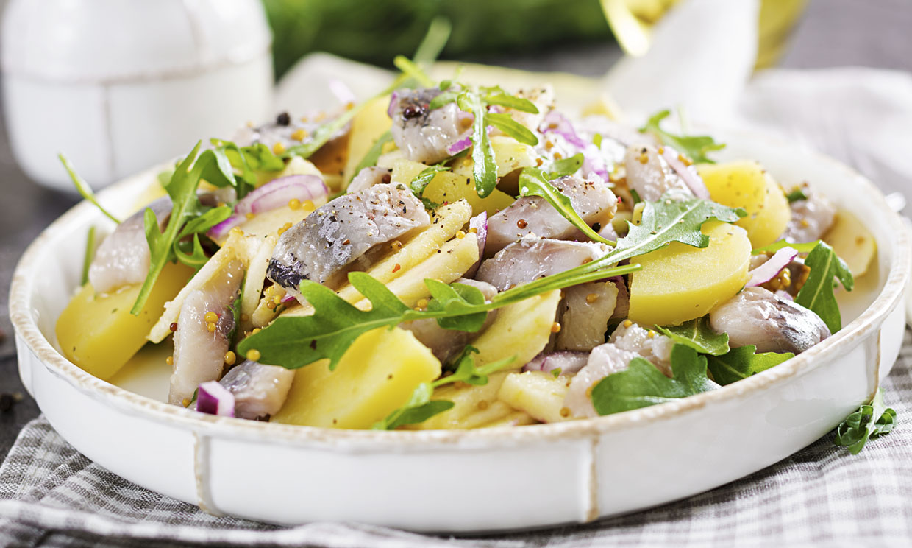

| Ingredients | Quantity |
|---|
*Boil the breast and chop it.
*Cut the potato and boil it for 30 min.
*In a salad bowl add the chicken, the potato, mix with salt and black pepper to taste.
* Incorporate the rest of the ingredients and mix with mayonnaise.